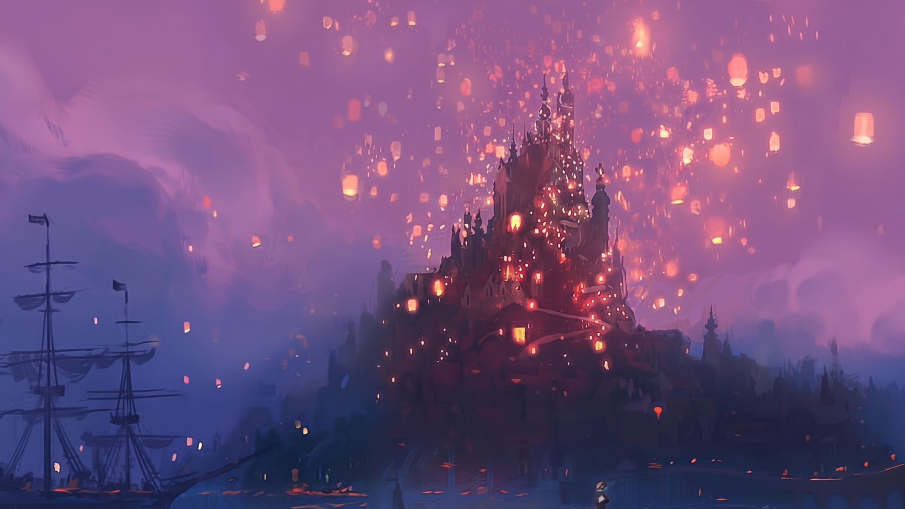
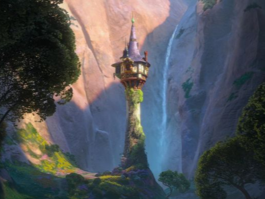
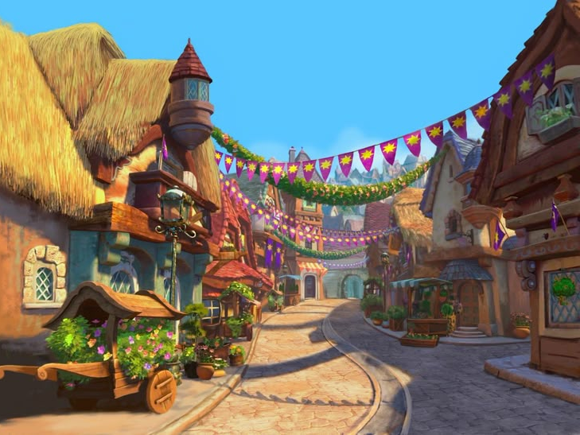

El Castillo Real
Corazón del reino y centro de las celebraciones del festival de faroles.

Descubre el lugar donde soñar se realiza despierto. Corona no es solo un reino, es una experiencia mágica famosa por su festival anual de faroles, su gastronomía y sus paisajes de ensueño.
Corazón del reino y centro de las celebraciones del festival de faroles.

Un refugio de paz rodeado de naturaleza, donde la belleza del entorno crea un lugar mágico.

Un laberinto de calles llenas de vida y color, creando un ambiente alegre y encantador.
En Corona, la tradición se amasa diariamente en nuestros hornos artesanales, donde el aroma a pan recién hecho inunda las calles. Desde las emblemáticas trenzas de pan dorado hasta nuestros dulces de hojaldre, cada bocado es una invitación a disfrutar de la magia culinaria que solo la cocina de Corona puede ofrecer.